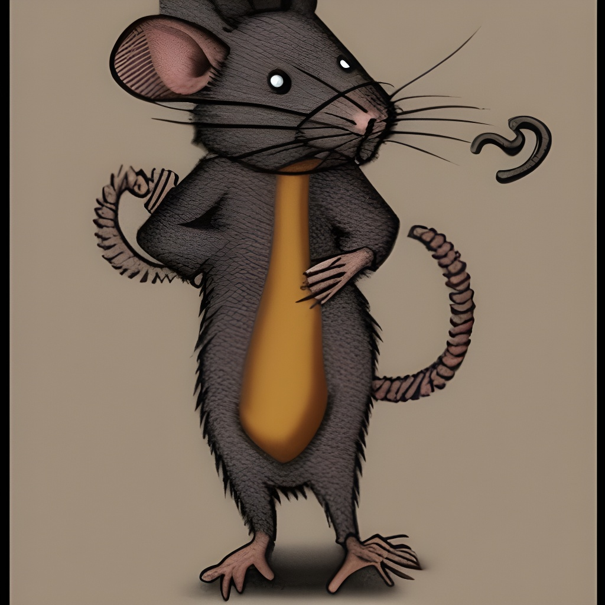

FURBO RODITORE CAMMORISTA

Sei convinto di stare un passo avanti al prossimo e credi anche di avermi fregato, eh?
Credi forse che io mi lasci fregare così caro il mio cammorista?
Ricordati ogni tanto che sebbene i ratti e gli insetti probabilmente sopravviveranno agli uomini,
al momento il mondo si regge grazie agli uomini che aiutano il prossimo e si fidano del prossimo.
Sei in ogni caso utile per affrontare le difficoltà e grazie a te molte malattie sono state scoperte et curate e messe al 41bis.
Consigli per gli acquisti:
Basta con ste stronzate